|
Projet elight
1.0
BTS CIEL IR LaSalle Avignon 2025
|
|
Projet elight
1.0
BTS CIEL IR LaSalle Avignon 2025
|
| eLight | ||
|---|---|---|
 | ||
| GitHub Actions | |
|---|---|
Le projet eLight vise à optimiser l'éclairage des structures telles que les supermarchés, entrepôts et salles de classe en ajustant la lumière en fonction des besoins réels des occupants. Grâce à des capteurs de luminosité et un contrôle intelligent, il permet de réaliser des économies d'énergie tout en garantissant un confort visuel optimal.
Ce module permet au client de gérer l’éclairage d’une salle. Il peut ainsi choisir un scénario d’éclairage, visualiser la consommation en cours, créer un nouveau scénario pour sa salle et gérer les scénarios existants. Il envoie des instructions aux modules contrôleur de segment.
Ce module permet au client de superviser toutes les salles équipées de système elight. Il peut visualiser les états de tous les segments, gérer les scénarios de toutes les salles, gérer les attributions de segment à une salle, suivre la consommation de toute l’installation à l’instant T et visualiser l’historique des consommations pour toute l’installation.
| Fonctionnalité | À faire | En cours | Achevé |
|---|---|---|---|
| La salle à gérer est paramétrable | X | ||
| L’état général de la salle est consultable | X | ||
| Les segments de la salle et leur état sont visualisables | X | ||
| Un scénario est sélectionnable pour la salle | X | ||
| La création d’un scénario pour la salle est possible | X | ||
| La gestion des scénarios est possible | X | ||
| La synchronisation des scénarios avec la BDD centrale est possible | X | ||
| La liaison sans fil est opérationnelle | X |
| Livrable | À faire | En cours | Achevé |
|---|---|---|---|
| Application informatique fonctionnelle | X | ||
| Modèle UML complet | X | ||
| Code source commenté | X | ||
| Documentations associées | X |
| Fonctionnalité | À faire | En cours | Achevé |
|---|---|---|---|
| L’état de n’importe quelle salle est affichable | X | ||
| L’édition des informations associées à une salle est possible | X | ||
| L‘état de n’importe quel segment est affichable | X | ||
| L’assignation d’un segment à une salle est possible | X | ||
| Tous les scénarios d’éclairage sont gérables | X | ||
| La consommation d’éclairage est visible à l’instant T | X | ||
| L’historique des consommations d’éclairage est visualisable | X | ||
| La liaison sans fil est opérationnelle | X |
| Livrable | À faire | En cours | Achevé |
|---|---|---|---|
| Application informatique fonctionnelle | X | ||
| Modèle UML complet | X | ||
| Code source commenté | X | ||
| Documentations associées | X |
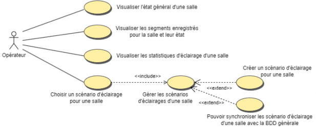
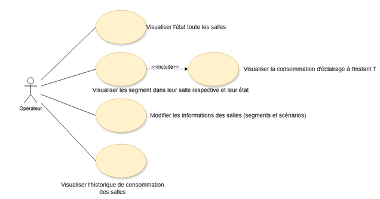
cf. eLight.sql
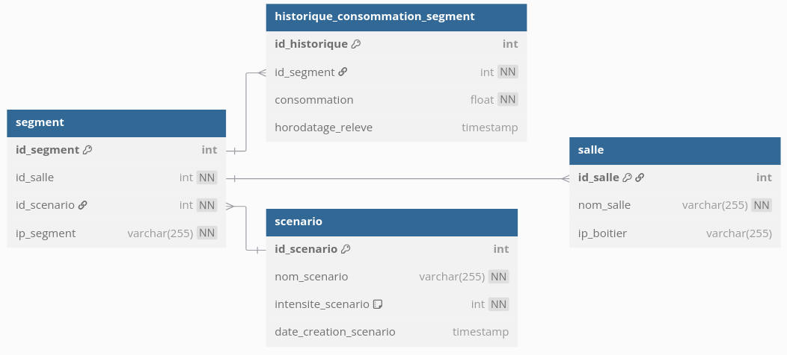
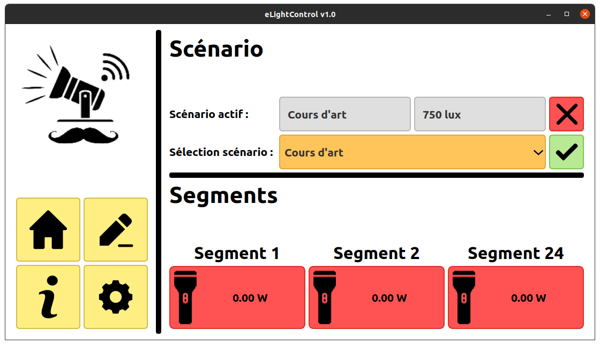
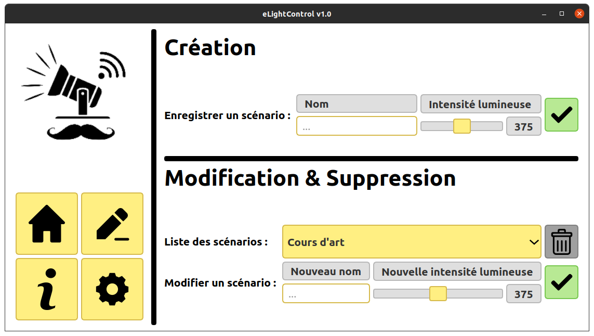
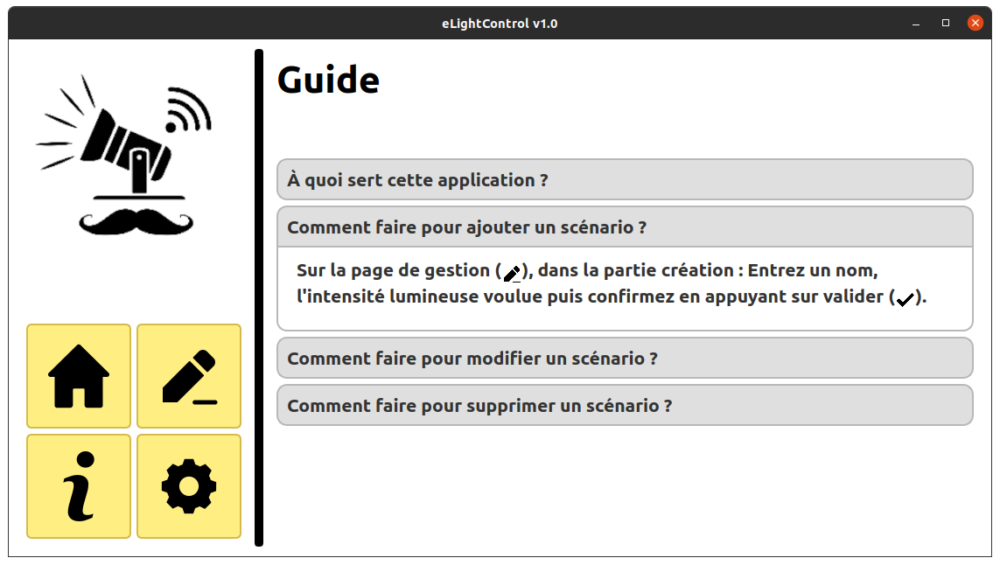
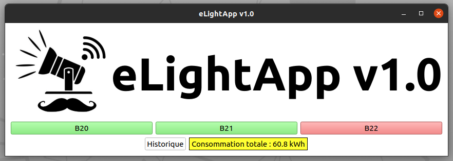
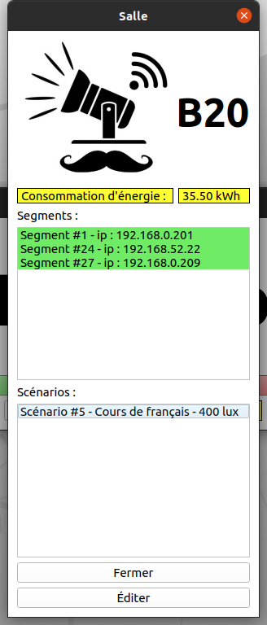
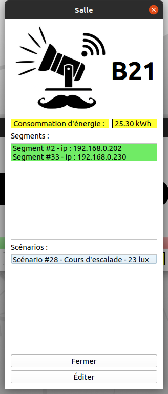
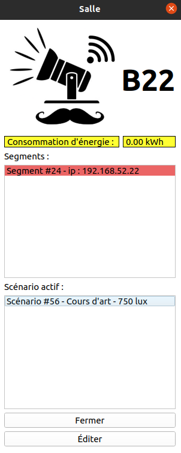
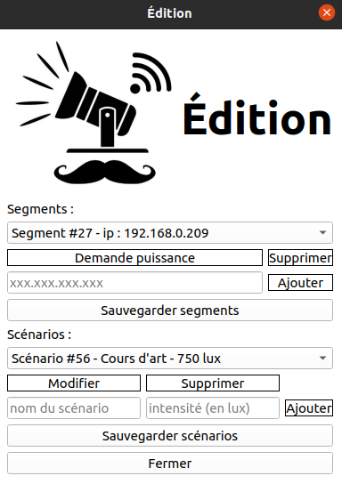
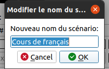
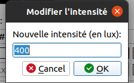
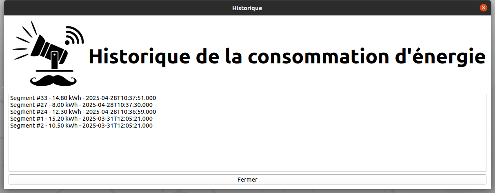
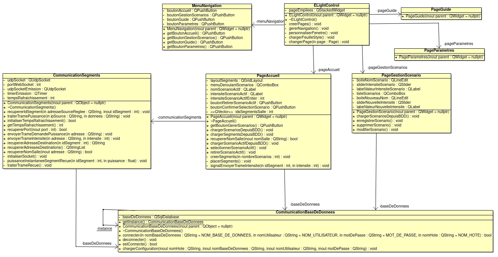

Ce protocole permet l’échange de données entre une application de gestion (logiciel) et un contrôleur de segment (matériel), via une trame normalisée transmise par Wi-Fi utilisant le protocole UDP. Les deux modules utilisent le même protocole de communication.
Les trames suivent le format suivant : #TYPE;DONNEE\r\n
Chaque élément de la trame a un rôle précis :
| Nom | Forme | Description | Exemple |
|---|---|---|---|
| Début | # | Caractère de début de trame, sert à la synchronisation. | # |
| Type | TYPE | Lettre indiquant l’action à exécuter. | P, I, A |
| Séparateur | ; | Permet de séparer le type de la donnée utile. | ; |
| Donnée | DONNEE | Contenu utile, valeur numérique transmise. | 300 |
| Fin | \r\n | Fin de trame. Convention utilisée pour délimiter la fin du message. | \r\n |
| Nom du type | Forme | Description | Exemple |
|---|---|---|---|
| Puissance (req) | #P;0\r\n | Requête envoyée par l’application pour obtenir la puissance instantanée d’un segment. | #P;0\r\n |
| Puissance (rep) | #P;xxx\r\n | Réponse envoyée par le segment avec la valeur de puissance mesurée. | #P;300\r\n |
| Intensité | #I;xxx\r\n | Ordre envoyé à un segment pour appliquer une intensité donnée. | #I;400\r\n |
| Accusé (ACK) | #A;0\r\n | Confirme la réception d’une trame ou indique la fin de communication. | #A;0\r\n |
Bien que le protocole UDP soit rapide, il ne garantit ni la réception ni l’ordre des paquets.
Pour améliorer la fiabilité :
© 2024-2025 LaSalle Avignon